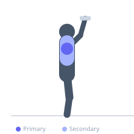
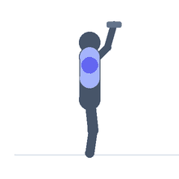

Exercise guide / Prone Scarecrow Press
Prone Scarecrow Press
The prone scarecrow press combines an external rotation at 90 degrees of shoulder abduction with a finishing overhead press, performed lying face-down on a bench. The scarecrow portion (elbows at shoulder height, forearms hanging down) isolates the infraspinatus and teres minor through external rotation in the vulnerable abducted position, then the press completes the movement in the overhead plane. This sequence trains rotator cuff function together with deltoid pressing, making it valuable for shoulder health and athletic development.
Primary muscles
infraspinatus
Secondary muscles
deltoid anterior
trapezius middle
Stabilizers
deltoid posterior
Equipment
Standard Barbell
Dumbbell (Fixed)


Starting position
- Lie face-down on an incline bench (30-45 degrees). Hold light dumbbells. Upper arms abducted to shoulder height, elbows bent 90 degrees, forearms hanging perpendicular to the floor.
Setup
- Very light weight — 2-5 kg. This is a rotator cuff and shoulder health exercise.
Steps
- Step 1: Begin in the scarecrow position — elbows at shoulder height, forearms hanging down.
- Step 2: Externally rotate both shoulders, raising the forearms until they are parallel to the floor (forearms now pointing forward).
- Step 3: From this horizontally extended position, press the dumbbells overhead to full arm extension.
- Step 4: Reverse the sequence — lower overhead to horizontal, then internally rotate back to the scarecrow hang.
- Step 5: Repeat.
Coaching cues
- Scarecrow arms first — elbows at shoulder height
- Rotate the forearms up before pressing
- Reverse it on the way back — press down, then rotate the forearms back down
Breathing
- Exhale through the external rotation and press. Inhale on the return.
Range of motion
- Full external rotation range before pressing overhead.
Tempo
- 2-1-2-1
Common mistakes
- Using too much weight — reduces the external rotation range of motion
- Skipping the external rotation — pressing directly from the hang misses the rehabilitation benefit
Safety
- Very light loads only
- Stop if shoulder impingement symptoms occur during the external rotation phase
Training
- rehabilitation: 10–15 reps
- rehabilitation: 2–3 sets
- Rest: {'rehabilitation': 60}